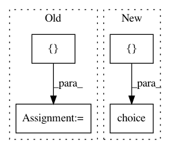

088f8ebb69e21c7759af44c6d207a266f4a5d175,python/ray/tune/examples/skopt_example.py,,,#,29
Before Change
// Now run the experiment without known rewards
algo = SkOptSearch(
optimizer, ["width", "height"],
metric="mean_loss",
mode="min",
points_to_evaluate=previously_run_params)
scheduler = AsyncHyperBandScheduler(metric="mean_loss", mode="min")
tune.run(
easy_objective,
name="skopt_exp",
After Change
"steps": 100,
"width": tune.uniform(0, 20),
"height": tune.uniform(-100, 100),
"activation": tune.choice(["relu", "tanh"])
}
}
// Optional: Pass the parameter space yourself
In pattern: SUPERPATTERN
Frequency: 3
Non-data size: 4
Instances
Project Name: ray-project/ray
Commit Name: 088f8ebb69e21c7759af44c6d207a266f4a5d175
Time: 2020-09-07
Author: krfricke@users.noreply.github.com
File Name: python/ray/tune/examples/skopt_example.py
Class Name:
Method Name:
Project Name: NTMC-Community/MatchZoo
Commit Name: 478d2f388dc65736b5d67f3560328904210ef1a1
Time: 2018-12-01
Author: i@uduse.com
File Name: matchzoo/models/arci_model.py
Class Name: ArcIModel
Method Name: get_default_params
Project Name: ray-project/ray
Commit Name: 088f8ebb69e21c7759af44c6d207a266f4a5d175
Time: 2020-09-07
Author: krfricke@users.noreply.github.com
File Name: python/ray/tune/examples/nevergrad_example.py
Class Name:
Method Name: